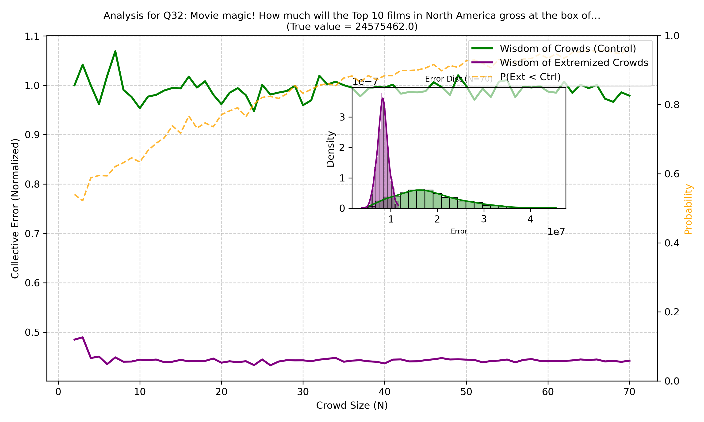
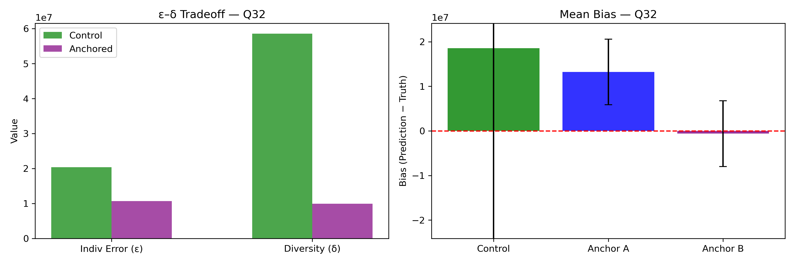
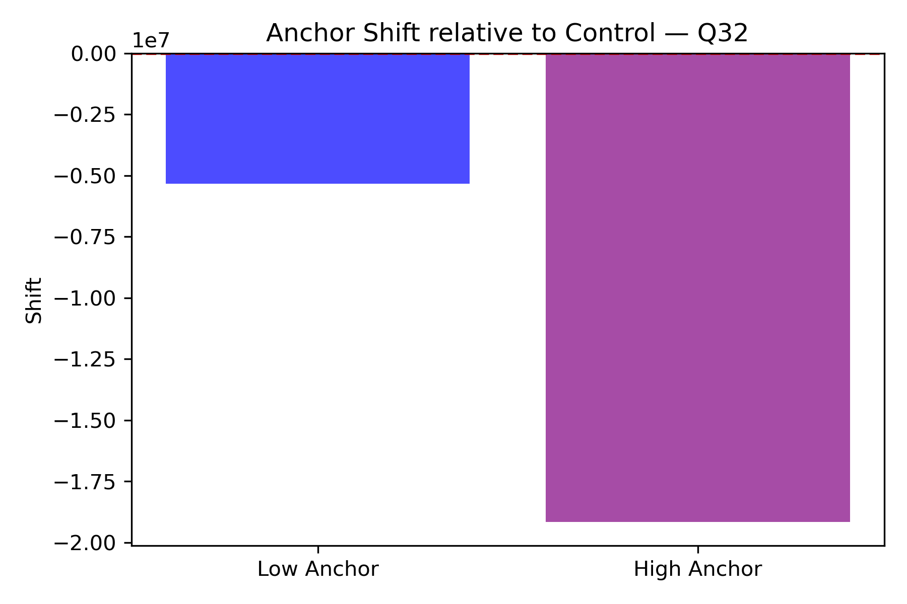
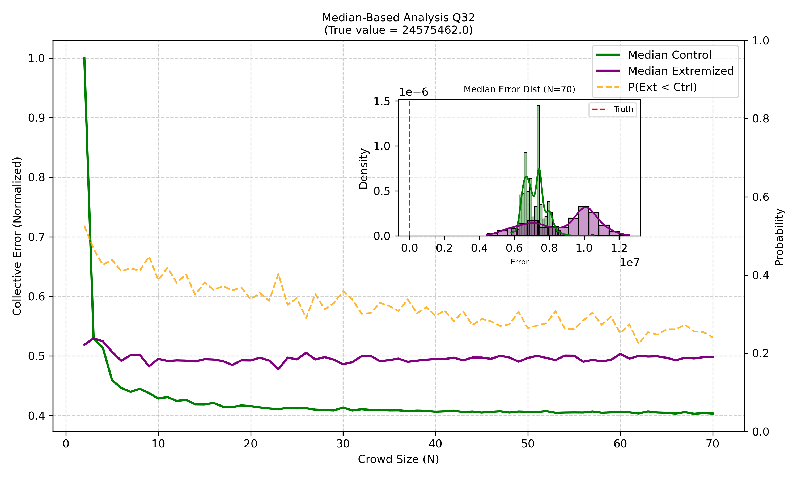
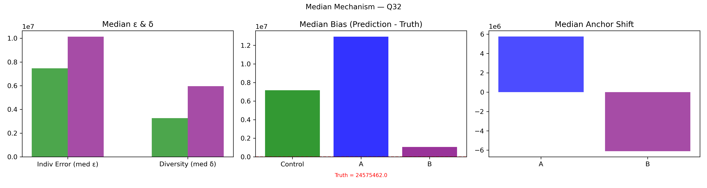

Q32
Movie magic! How much will the Top 10 films in North America gross at the box office on Monday?
📋 Question Details
| Truth (θ) | 24575462.0 |
| Low Anchor | 10973333.0 |
| High Anchor | 42991006.0 |
📈 DPT Analysis Summary
✓ Yes
Extremization Improved
δ↓ ε↓ E↓
Mechanism
Low
Best Condition
E_control = 344257188826741.6875 → E_extremized = 68659217174725.7109
📋 Full Super Summary (click to expand)
================================================================================ QUESTION Q32: 05_Export_0713_stats_WX9D1I5WWT.csv Movie magic! How much will the Top 10 films in North America gross at the box office on Monday? Truth = 24575462.0 N_ctrl = 168 N_ext = 70 ================================================================================ [1] MEAN-BASED COLLECTIVE ERROR Ec=18279068.9830 ± 7067105.3598, CI=[7404607.1200,34018651.2314] Ex=8248566.7128 ± 1169336.5665, CI=[5917186.2118,10579295.5964] Percent Change = -54.87% Bootstrap P(Ext<Ctrl) = 0.9500 t-test(E): t=44.281, p=0.000000 (SIGNIFICANT (p < .05)) [2] MEAN INDIVIDUAL ERROR (ε) ε_ctrl=20645077.5298, ε_ext=10719477.8143 Percent Change = -48.08% Welch t-test p = 0.03092 [3] MEAN DIVERSITY (δ) δ_ctrl=58595087.5022, δ_ext=9904390.7827 Percent Change = -83.10% Levene p = 0.2121 [4] ANCHOR DIAGNOSTICS Anchors: A=42991006.0, B=10973333.0 Effective: A=False, B=False [5] EQUATION 6 CHECK w_L=0.5959, w_H=38.4271, Δ=1901870.6940 Criterion_L=None, Criterion_H=None Meets both = False [6] MEAN δ–ε–E SCENARIO Scenario: δ:down, ε:down, E:down Mechanism Explanation: Calibration: forecasts shift inward toward truth (24575462.0), reducing diversity and individual error. ================================================================================ INTERPRETATION — MEAN AGGREGATION ================================================================================ Mean-based collective error changed by -54.87% relative to the true value 24575462.0. Scenario=δ:down, ε:down, E:down. Equation 6 feasibility=False. ================================================================================ [7] MEDIAN AGGREGATION SUMMARY Median E: 7162772.0000 → 9588212.0000 (33.86%) Median ε: 7467336.0000 → 10130948.0000 (35.67%) Median δ: 3261766.0000 → 5955050.5000 (82.57%) Median Scenario: δ:up, ε:up, E:up Mean vs Median: Median contradicts mean. Interpretation: Median indicates predictions moved away from the true value (24575462.0). Median t-test p-value = 0.000000 (SIGNIFICANT (p < .05)) [8] MEAN vs MEDIAN — NUMERICAL COMPARISON Mean Scenario: δ:down, ε:down, E:down Median Scenario: δ:up, ε:up, E:up Conclusion: Mean improvement is driven by tail behavior, but the median indicates the majority of forecasters moved away from truth = 24575462.0. ================================================================================
📊 Mean-Based Barrera Analysis
Distribution comparison showing Control vs Low Anchor vs High Anchor conditions with error analysis using mean estimates. This replicates the B-L methodology.

🔬 Mechanism Analysis
Decomposition of collective error into individual error (ε) and diversity (δ).
Main Mechanism (ε-δ Decomposition)

Anchor Shift Analysis

📈 Median-Based Analysis
Robustness check using median estimates (less sensitive to outliers).
Median Distribution Analysis

Median Mechanism Analysis
